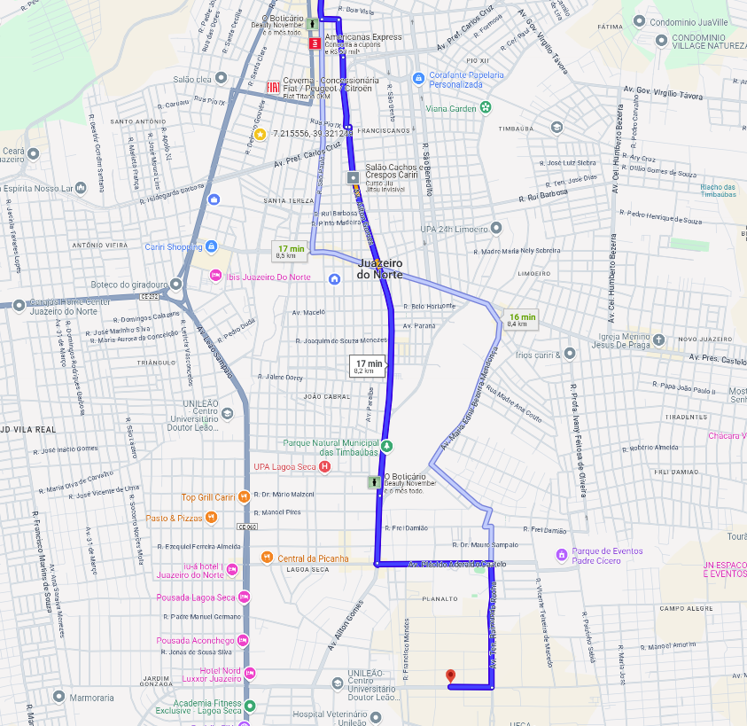

NH04 - Viametro001
Juazeiro do Norte
Juazeiro do Norte
24 KM
Quilômetros Totais
Quilômetros Totais
2 Horas
Tempo Médio
Tempo Médio
50 Km/h
Velocidade Média
Velocidade Média
80 Km/h
Velocidade Máxima
Velocidade Máxima
Rotas
| SEMAFORO | RUA | DATA |
|---|---|---|
| SEMAFORO 090 | Rua do Cruzeiro → Rua São Pedro | 27 Novembro 2024 |
| SEMAFORO 001 | Rua Padre Cícero → Rua Pio X | 27 Novembro 2024 |
| SEMAFORO 011 | Av. Duque de Caxias → Rua José Marrocos | 27 Novembro 2024 |
| SEMAFORO 024 | Rua Santa Luzia → Rua São Benedito | 27 Novembro 2024 |
| SEMAFORO 034 | Av. Manoel Coelho de Alencar → Av. Pres. Castelo Branco | 27 Novembro 2024 |
| SEMAFORO 090 | Rua Pedro Henrique de Souza → Av. Cel. Humberto Bezerra | 27 Novembro 2024 |
SEMAFORO 001
Rua São Cruzeiro, Juazeiro do Norte
Rua São Pedro, Juazeiro do Norte
SEMAFORO 090
Rua Padre Cícero, Juazeiro do Norte
Rua Pio X, Juazeiro do Norte
SEMAFORO 011
Avenida Duque de Caxias, Crato
Rua José Marrocos, Crato
SEMAFORO 024
Rua Santa Luzia, Juazeiro do Norte
Rua São Benedito, Juazeiro do Norte